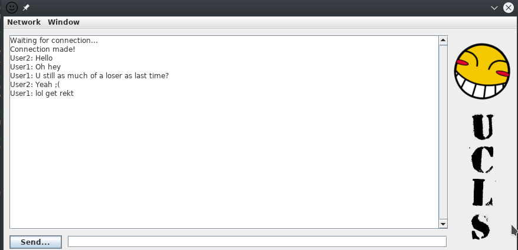

This project is just a chat room that I made in java a while back for fun. Nothing too crazy with it. You are able to host a room and chat with other clients.
Not too shabby. Ha, who am I kidding, that shit is shabby as fuck. I got basic chat stuff implimented but not too much else. I had plans to add stuff like browsing the LAN network for active servers, contacts, and passwords on chat lobbies. But that's on hold basicly forever. This was so long ago I'm not even sure what the UCLS stands for anymore. Oh well, I may give this thing some love in the future but probobly not lol.